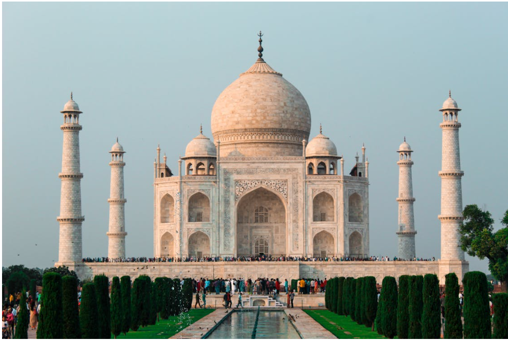

Taj Mahal stands on the bank of River Yamuna, which otherwise serves as a wide most defending the Great Red Fort of Agra, the center of the Mughal emperors until they moved their capital to Delhi in 1637. It was built by the fifth Mughal emperor, Shah Jahan in 1631 in memory of his third but the most favourite wife, in fact a soul-mate Mumtaz Mahal, a Muslim Persian princess. She died while accompanying her husband in Burhanpur in a campaign to crush a rebellion after giving birth to their 13th child. The death so crushed the emperor that all his hair and beard were said to have grown snow white in a few months.
To the last category belong the oldest tales of the Taj. Here the most widely known is the story of the second Taj, the 'Black Taj', which Shah Jahan intended to build in black marble opposite the present mausoleum, on the site of the Mahtab Bagh. It goes back to Jean-Baptiste Tavernier who, when at Agra in 1665 AD, reported that 'Shahjahan began to built his own tomb on the other side of the river, but the war with his sons interrupted his plan, and Aurangzeb, who reigns at present, is not disposed to complete it. Shah Jahan was put under house arrest by his own son and successor by force, Aurangzeb. The latter did not agree with his father on most issues and was particularly opposed to him building a black Taj as his own mausoleum. Upon Shah Jahan's death, Aurangzeb made the body of the Emperor, who got the body of his beloved Mumtaz in a golden casket from Burhanpur to Agra, carried in a boat by only two men and buried him in the Taj, next to his wife in probably the simplest manner.
A massive red-sandstone fort located on the banks of River Yamuna was built under the commission of Emperor Akbar in 1565 and was further built by his grandson Shah Jahan. The fort, semi-circular on plan, is surrounded by a 21.4 m high fortification wall. The fort was built primarily as a military structure; parts of it are still reserved under Indian Army. Shah Jahan transformed it into a palace, later it became his gilded prison for eight years after his son Aurangzeb seized power in 1658. The fort houses a maze of buildings, including vast underground sections. The Amar Singh Gate to the south is the sole entry point. A path leads straight from here up to the large Moti Masjid. Just before this is the open Diwan-e-Aam, where Shah Jahan listened to people’s petitions or issues. A small staircase just to the left of Diwan-e-Aam throne leads up to a large courtyard. To the left is a beautiful white marble Nagina Masjid. Other places to see within the Fort are: Diwan-e-Khas - which once housed Shah Jahan’s legendary Peacock throne and the diamond Koh-I-Noor, Shish Mahal- a palace with walls inlaid with tiny mirrors, and Khas Mahal - the white octagonal tower and palace. In the South of the fort, there is a huge red-sandstone Jahangir’s Palace, built by Akbar probably for his son Jahangir.